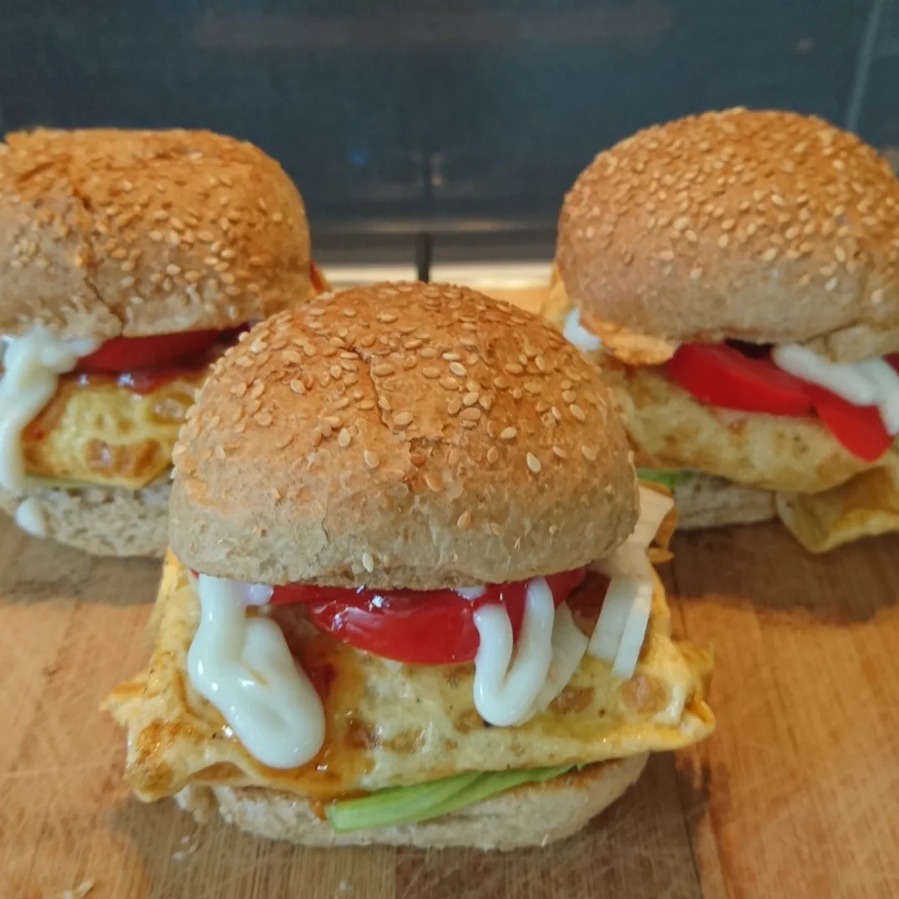

Ramly Burger

Burger ramly, one of the many sinful but blissful streetfood sold in the neighbourhoods in Malaysia
Ingredients
- 1 Chicken/Meat Burger Steak
- 1 Burger bun
- A slice of Cheese
- An Egg
- Some Cabbage
- Some Tomatoes
- Mayonnaise
- Tomato sauce
- Worcestershire sauce
- Curry Powder
Recipe instructions
- Add 1 tablespoon of butter into the non-stick pan. Fry chicken/meat patty over medium heat until done.
- Fry the egg over low heat and spread it evenly on the pan. Place the patty on top of the egg.
- Add Worcestershire sauce, curry powder and cheese on the patty.
- Wrap the patty with the egg and place them onto the bun.
- Spread butter on the bun and toast the bun into non-stick pan over medium heat on both sides (20 secs).
- Then, add cabbage and tomatoes. Spread tomato sauce and mayonnaise, cover the bun.